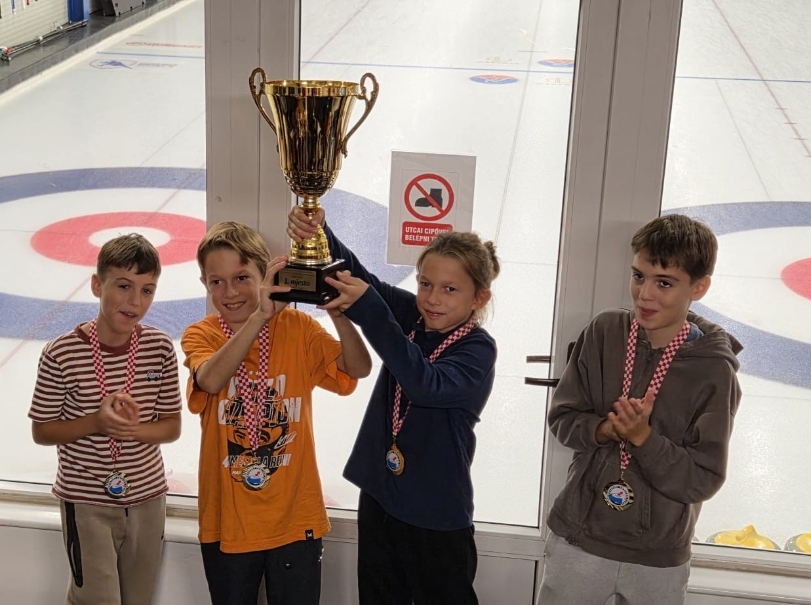
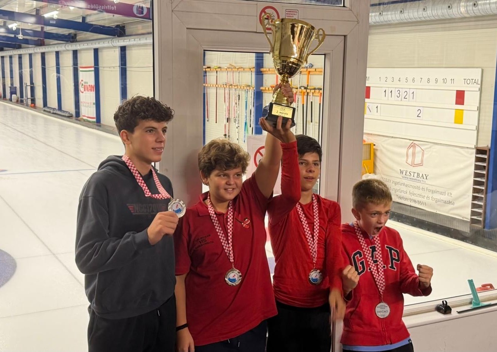
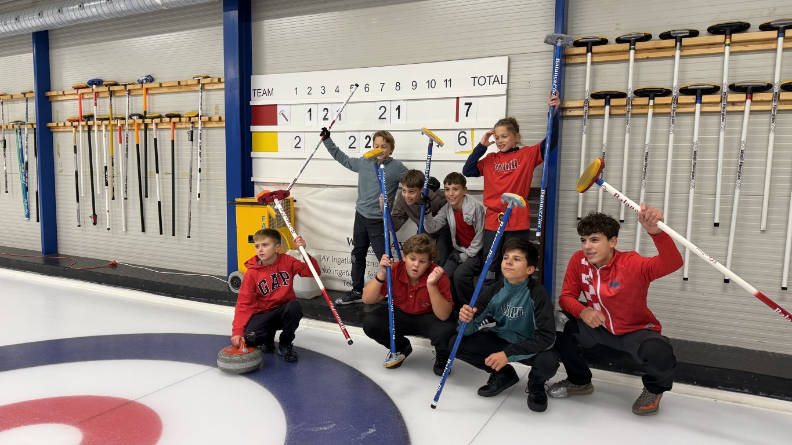
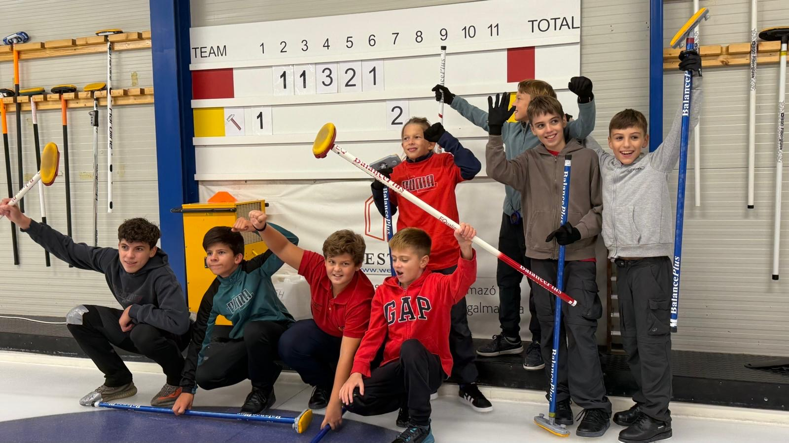
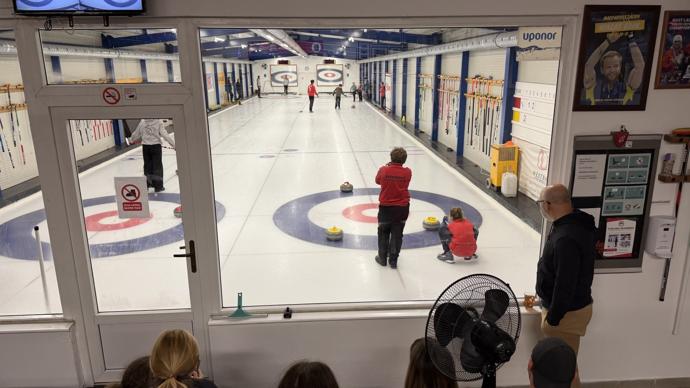
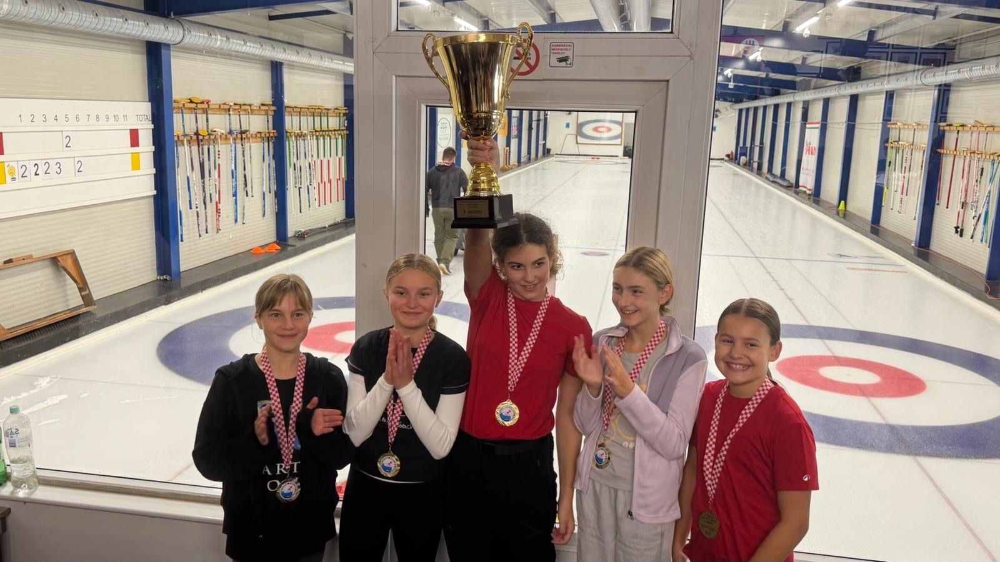
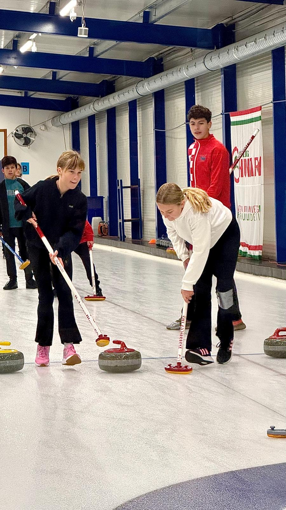
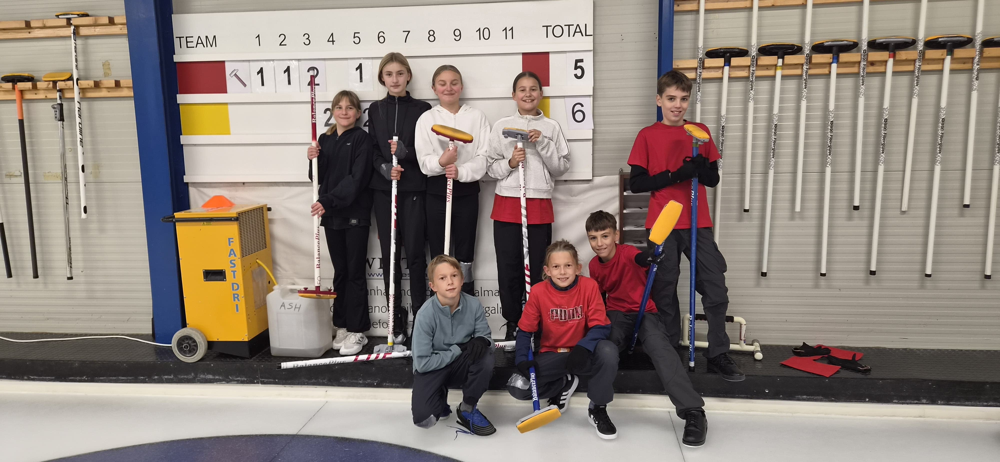
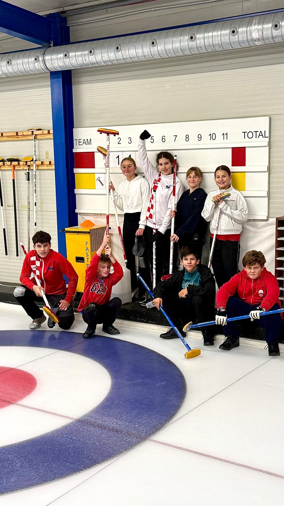

Uzbudljiv vikend za hrvatski curling — juniorska prvenstva i seniorska kruna za Silent
Prošlog vikenda, 19. i 20. rujna 2026. godine, u Budimpešti su održana prvenstva Hrvatske u curlingu. Po prvi puta, uz tradicionalno seniorsko prvenstvo Hrvatske, organizirano je i zajedničko juniorsko prvenstvo — prvenstvo Hrvatske za muškarce juniore i prvenstvo Hrvatske za žene juniorke. Ovim korakom hrvatski curling ulazi u novu razvojnu fazu i šalje snažan signal da sport raste i da dolaze nova, mlada lica.









U zajedničkom juniorskom prvenstvu u disciplini muški juniori, zlatnu medalju i titulu prvaka Hrvatske osvojila je ekipa Vis 2. Čestitamo mladim igračima na odličnom ostvarenju i želimo ih vidjeti i na budućim natjecanjima! Ženska juniorska ekipa Vis natjecala se s muškim juniorima budući da nije imala konkurenciju u svojoj disciplini pa je tako automatski poslala prvakom.
Ekipe su nastupile u sljedećim sastavima:
Vis 2 (juniori): Aron Užarević, Ruben Užarević, Ivan Prstec, Filip Prstec
Vis (juniori): Marko Skendrović, Ivan Zvonimir Einwalter, Luka Kapović, Bartol Čadež
Vis (juniorke): Lucija Kapović, Klara Džepina, Eva Medak, Ella Banović, Vita Banović
U najjačoj konkurenciji, seniorskom prvenstvu Hrvatske za žene u kojem su nastupile četiri ekipe, trijumfirala je ekipa Silent, koja je tako potvrdila svoju klasu i dodala još jednu titulu u bogatu klupsku kolekciju. Čestitamo svim natjecateljicama na izvedenim utakmicama i sportskom duhu koji je krasio cijeli vikend.
Ekipe su nastupile u sljedećim sastavima:
Silent: Aron Užarević, Ruben Užarević, Ivan Prstec, Filip Prstec
Čudnovati Čunjaš: Marko Skendrović, Ivan Zvonimir Einwalter, Luka Kapović, Bartol Čadež
Vis: Lucija Kapović, Klara Džepina, Eva Medak, Ella Banović, Vita Banović
Vis 2: Ivana Mrčela Einwalter, Ana Hermanović, Andrea Skendrović, Sandra Paurević, Katarina Čadež
Naši mađarski prijatelji iz curling dvorane u Budimpešti bili su odlični domaćini, a ovaj vikend ostaje zapisan kao poseban — dan kada je juniorski curling u Hrvatskoj dobio svoje prvo službeno samostalno natjecanje.